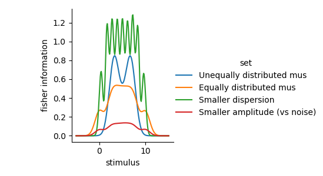

Note
Go to the end to download the full example code
Fisher information to estimate precision of encoding parameters across stimulus space#
Fisher information is defined as the expected value of the square of the derivative of the log-likelihood with respect to some parameter.
In our case, the parameter $theta$ might be the stimulus (dimension) we are interested in. What the Fisher information now gives us, _given a fitted encoding and noise model_, is the expected precision of the estimated parameter across the stimulus space.
In other words, using the Fisher information, we can already estimate how well we can estimate the stimulus at different locations in stimulus space without actually doing any decoding.
Notably, Fisher information also plays a crucial role in efficient coding theory. In general, the expected squared error of a likelihood function, given a limited ‘information budget’, can be minimized by using a likelihood function where the Fisher information is proportional to the derivative of the cummulative prior distribution ().
# Import necessary libraries
from braincoder.models import GaussianPRF
import pandas as pd
import numpy as np
import scipy.stats as ss
import seaborn as sns
Set up generating model#
Let’s set up a Gaussian PRF on the line that generates some data. We put the centers of the PRFs equally across the line, using a the quantiles of a uniform prior distribution (i.e. the quantiles of a uniform distribution are equally spaced). %
# 8 points on the uniform distribution between 0 and 10
mus = ss.uniform(0, 10.).ppf(np.linspace(0.0, 1.0, 10)[1:-1])
parameters = pd.DataFrame({'mu':mus, 'sd':1., 'baseline':0.0, 'amplitude':1.0})[['mu', 'sd', 'amplitude', 'baseline']]
# Let's go over the entire line from 0 to 10
paradigm = pd.Series(np.linspace(-2, 12, 100, dtype=np.float32))
# For now let's assume the noise is spherical
omega = np.identity(len(parameters)).astype(np.float32)
model = GaussianPRF(parameters=parameters, paradigm=paradigm)
data = model.predict(paradigm=paradigm).set_index(pd.Index(paradigm, name='stimulus'))
data = data.stack().to_frame('strength')
data.index.set_names('rf', level=1, inplace=True)
sns.lineplot(data=data.reset_index(), x='stimulus', y='strength', hue='rf', palette=['k'], alpha=0.5, legend=False)
sns.despine()
/Users/gdehol/git/braincoder/examples/00_encodingdecoding/fisher_information.py:58: UserWarning:
The palette list has fewer values (1) than needed (8) and will cycle, which may produce an uninterpretable plot.
sns.lineplot(data=data.reset_index(), x='stimulus', y='strength', hue='rf', palette=['k'], alpha=0.5, legend=False)
Calculate Fisher Information#
Now that we have the generating model, we can calculate the Fisher information for each stimulus point. We can do this by taking the expectation of the second derivative of the log-likelihood with respect to the stimulus. the fucntion Model.get_fisher_information does this for us by sampling from the noise distribution defined by omega and calculating the second derivative of the log-likelihood with respect to the stimulus using autodiff. %
fisher_information = model.get_fisher_information(stimuli=np.linspace(-5, 15, 1000).astype(np.float32), omega=omega, dof=None, n=5000).to_frame()
sns.lineplot(x='stimulus', y='Fisher information', data=fisher_information.reset_index(), color='k')
sns.despine()
We can see that the Fisher information is largest at the center of the PRFs and decreases towards the edges. This is because the PRFs are more overlapping at the center and less overlapping at the edges. This is also reflected in the Fisher information, which is a measure of the expected precision of the estimated stimulus at each point in stimulus space. Outside of the receptive fields, the Fisher information is 0: when stimuli occur outside of the receptive fields, the likelihood function is flat and the Fisher information is 0. %%
Note that if we include some correlation in the errors of the receptive fields, under some conditions, the Fisher information is higher.
omega_correlated = omega + .5 - .5*np.identity(len(parameters))
fisher_information_uncorrelated = model.get_fisher_information(stimuli=np.linspace(-5, 15, 1000).astype(np.float32), omega=omega.astype(np.float32), dof=None, n=5000).to_frame()
fisher_information_correlated = model.get_fisher_information(stimuli=np.linspace(-5, 15, 1000).astype(np.float32), omega=omega_correlated.astype(np.float32), dof=None, n=5000).to_frame()
fisher_information = pd.concat((fisher_information_uncorrelated, fisher_information_correlated), axis=0, keys=['uncorrelated', 'correlated'], names=['correlation'])
sns.lineplot(x='stimulus', y='Fisher information', data=fisher_information.reset_index(), color='k', style='correlation')
sns.despine()
We can also validate the Fisher information by decoding and looking at the errors of the decoded stimuli. The Fisher information should be inversely proportional to the expected squared error of the decoded stimuli. %%
import matplotlib.pyplot as plt
paradigm = np.repeat(np.linspace(-2, 12, 50, dtype=np.float32), 100)
simulated_data = model.simulate(paradigm=paradigm, noise=omega)
omega = np.identity(len(parameters)).astype(np.float32)
pdf = model.get_stimulus_pdf(simulated_data, np.linspace(-5, 15, 100), omega=omega)
E = np.trapz(pdf*pdf.columns.values[np.newaxis, :], x=pdf.columns, axis=1)
error = np.sqrt((paradigm - E)**2)
error = pd.Series(error, index=pd.Index(paradigm, name='stimulus')).to_frame('error')
sns.lineplot(x='stimulus', y='error', data=error)
sns.despine()
plt.title('Objective decoding error')
Text(0.5, 1.0, 'Objective decoding error')
same goes for the variance of the decoded posterior
posterior_variance = np.trapz(pdf*(pdf.columns.values[np.newaxis, :] - E[:, np.newaxis])**2, x=pdf.columns, axis=1)
error['posterior sd'] = np.sqrt(posterior_variance)
plt.figure()
sns.lineplot(x='stimulus', y='posterior sd', data=error.reset_index())
sns.despine()
plt.title('Posterior std.')
Text(0.5, 1.0, 'Posterior std.')
Fisher information for different RF distributions#
Let’s calculate the Fisher information for different RF structures %
# Centered distribution around 5.
mus1 = ss.norm(5, 1.).ppf(np.linspace(1e-4, 1-1e-4, 10)[1:-1])
# 8 points on the uniform distribution between 0 and 10
mus2 = ss.uniform(0, 10).ppf(np.linspace(1e-4, 1-1e-4, 10)[1:-1])
parameters_sets = [{'mu':mus1, 'sd':1.5, 'baseline':0.0, 'amplitude':1.0},
{'mu':mus2, 'sd':1.5, 'baseline':0.0, 'amplitude':1.0},
{'mu':mus2, 'sd':.75, 'baseline':0.0, 'amplitude':1.0},
{'mu':mus2, 'sd':1.5, 'baseline':0.0, 'amplitude':.5}]
parameter_sets = pd.concat([pd.DataFrame(p)[['mu', 'sd', 'amplitude', 'baseline']] for p in parameters_sets], keys=range(4), names=['set', 'parameter'], axis=0)
set_labels = ['Unequally distributed mus', 'Equally distributed mus', 'Smaller dispersion', 'Smaller amplitude (vs noise)' ]
# Make predictions
preds = []
for set, pars in parameter_sets.groupby('set'):
model = GaussianPRF(parameters=pars.droplevel(0), paradigm=paradigm)
pred = model.predict(paradigm=paradigm).set_index(pd.Index(paradigm, name='stimulus'))
preds.append(pred)
preds = pd.concat(preds, keys=set_labels, axis=0, names=['set'])
# Calculate Fisher information
fis = []
stimuli = np.linspace(-5, 15, 200, dtype=np.float32)
for set, pars in parameter_sets.groupby('set'):
model = GaussianPRF(parameters=pars.droplevel(0), paradigm=paradigm)
omega = np.identity(len(pars)).astype(np.float32)
fi = model.get_fisher_information(stimuli=stimuli, omega=omega, n=10000).to_frame("fisher information").set_index(pd.Index(stimuli, name='stimulus'))
fis.append(fi)
fis = pd.concat(fis, keys=set_labels, axis=0, names=['set'])
# Plot the receptive fields and the Fisher information
tmp = preds.stack().to_frame('strength').join(fis)
g = sns.FacetGrid(col='set', col_wrap=2, data=tmp.reset_index(), sharey=True, col_order=set_labels)
g.map_dataframe(sns.lineplot, 'stimulus', 'strength', hue='parameter', palette=['k'], alpha=0.5)
g.set_titles('{col_name}')
g.figure.suptitle('Receptive field distributions')
g.figure.subplots_adjust(top=.9)
g2 = sns.FacetGrid(col='set', col_wrap=2, data=fis.reset_index(), sharey=True, col_order=set_labels)
g2.map(sns.lineplot, 'stimulus', 'fisher information', color='r')
g2.add_legend()
g2.set_titles('{col_name}')
g2.figure.suptitle('Fisher information')
g2.figure.subplots_adjust(top=.9)
g3 = sns.FacetGrid(hue='set', data=fis.reset_index(), sharey=True)
g3.map(sns.lineplot, 'stimulus', 'fisher information')
g3.add_legend()
- 
WARNING:tensorflow:5 out of the last 7 calls to <function EncodingModel._predict at 0x2c80ee560> triggered tf.function retracing. Tracing is expensive and the excessive number of tracings could be due to (1) creating @tf.function repeatedly in a loop, (2) passing tensors with different shapes, (3) passing Python objects instead of tensors. For (1), please define your @tf.function outside of the loop. For (2), @tf.function has reduce_retracing=True option that can avoid unnecessary retracing. For (3), please refer to https://www.tensorflow.org/guide/function#controlling_retracing and https://www.tensorflow.org/api_docs/python/tf/function for more details.
WARNING:tensorflow:6 out of the last 8 calls to <function EncodingModel._predict at 0x11c2ba5f0> triggered tf.function retracing. Tracing is expensive and the excessive number of tracings could be due to (1) creating @tf.function repeatedly in a loop, (2) passing tensors with different shapes, (3) passing Python objects instead of tensors. For (1), please define your @tf.function outside of the loop. For (2), @tf.function has reduce_retracing=True option that can avoid unnecessary retracing. For (3), please refer to https://www.tensorflow.org/guide/function#controlling_retracing and https://www.tensorflow.org/api_docs/python/tf/function for more details.
WARNING:tensorflow:5 out of the last 7 calls to <function EncodingModel._likelihood at 0x2bff04b80> triggered tf.function retracing. Tracing is expensive and the excessive number of tracings could be due to (1) creating @tf.function repeatedly in a loop, (2) passing tensors with different shapes, (3) passing Python objects instead of tensors. For (1), please define your @tf.function outside of the loop. For (2), @tf.function has reduce_retracing=True option that can avoid unnecessary retracing. For (3), please refer to https://www.tensorflow.org/guide/function#controlling_retracing and https://www.tensorflow.org/api_docs/python/tf/function for more details.
WARNING:tensorflow:6 out of the last 8 calls to <function EncodingModel._likelihood at 0x2bff05000> triggered tf.function retracing. Tracing is expensive and the excessive number of tracings could be due to (1) creating @tf.function repeatedly in a loop, (2) passing tensors with different shapes, (3) passing Python objects instead of tensors. For (1), please define your @tf.function outside of the loop. For (2), @tf.function has reduce_retracing=True option that can avoid unnecessary retracing. For (3), please refer to https://www.tensorflow.org/guide/function#controlling_retracing and https://www.tensorflow.org/api_docs/python/tf/function for more details.
/Users/gdehol/mambaforge/lib/python3.10/site-packages/seaborn/axisgrid.py:854: UserWarning:
The palette list has fewer values (1) than needed (8) and will cycle, which may produce an uninterpretable plot.
func(*plot_args, **plot_kwargs)
/Users/gdehol/mambaforge/lib/python3.10/site-packages/seaborn/axisgrid.py:854: UserWarning:
The palette list has fewer values (1) than needed (8) and will cycle, which may produce an uninterpretable plot.
func(*plot_args, **plot_kwargs)
/Users/gdehol/mambaforge/lib/python3.10/site-packages/seaborn/axisgrid.py:854: UserWarning:
The palette list has fewer values (1) than needed (8) and will cycle, which may produce an uninterpretable plot.
func(*plot_args, **plot_kwargs)
/Users/gdehol/mambaforge/lib/python3.10/site-packages/seaborn/axisgrid.py:854: UserWarning:
The palette list has fewer values (1) than needed (8) and will cycle, which may produce an uninterpretable plot.
func(*plot_args, **plot_kwargs)
<seaborn.axisgrid.FacetGrid object at 0x2bd2010c0>
Another intersting phenomenon we can now study is how different basis functions/receptive fields modulate the Fisher information. For example, it is well-known that numerical receptive fields in parietal cortex are shaped as a log-normal distribution. We can now study how the Fisher information is modulated by the shape of the receptive fields.
from braincoder.models import LogGaussianPRF
mus = np.linspace(5, 25, 8)
parameters = pd.DataFrame({'mu':mus, 'sd':25., 'baseline':0.0, 'amplitude':1.0})[['mu', 'sd', 'amplitude', 'baseline']]
# Set up model and paradigm and plot the receptive fields
paradigm = np.linspace(0, 100, 100, dtype=np.float32)
model = LogGaussianPRF(parameters=parameters, paradigm=paradigm)
y = model.predict(paradigm=paradigm)
y.plot(c='k', legend=False, alpha=0.5)
sns.despine()
plt.title('Receptive fields')
# Calculate Fisher information
omega = np.identity(len(parameters)).astype(np.float32)
fisher_information = model.get_fisher_information(stimuli=np.linspace(5, 100, 1000).astype(np.float32), omega=omega, n=5000).to_frame()
fisher_information['sqrt(fi)'] = np.sqrt(fisher_information['Fisher information'])
plt.figure()
sns.lineplot(x='stimulus', y='sqrt(fi)', data=fisher_information.reset_index(), color='k')
plt.title('Square root of Fisher information')
Text(0.5, 1.0, 'Square root of Fisher information')
Somewhat consistent with the literature, the Fisher information behaves roughly like 1/x now, where x is the stimulus. This means that the precision of the estimated stimulus decreases with increasing stimulus value.
Total running time of the script: (0 minutes 39.358 seconds)